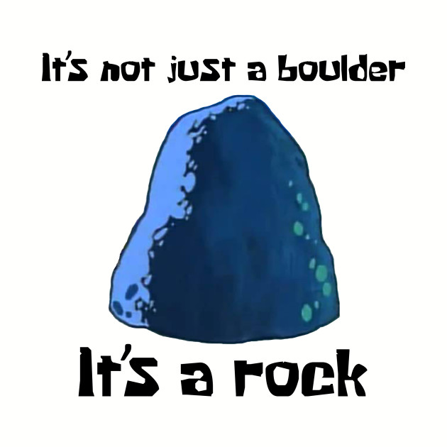
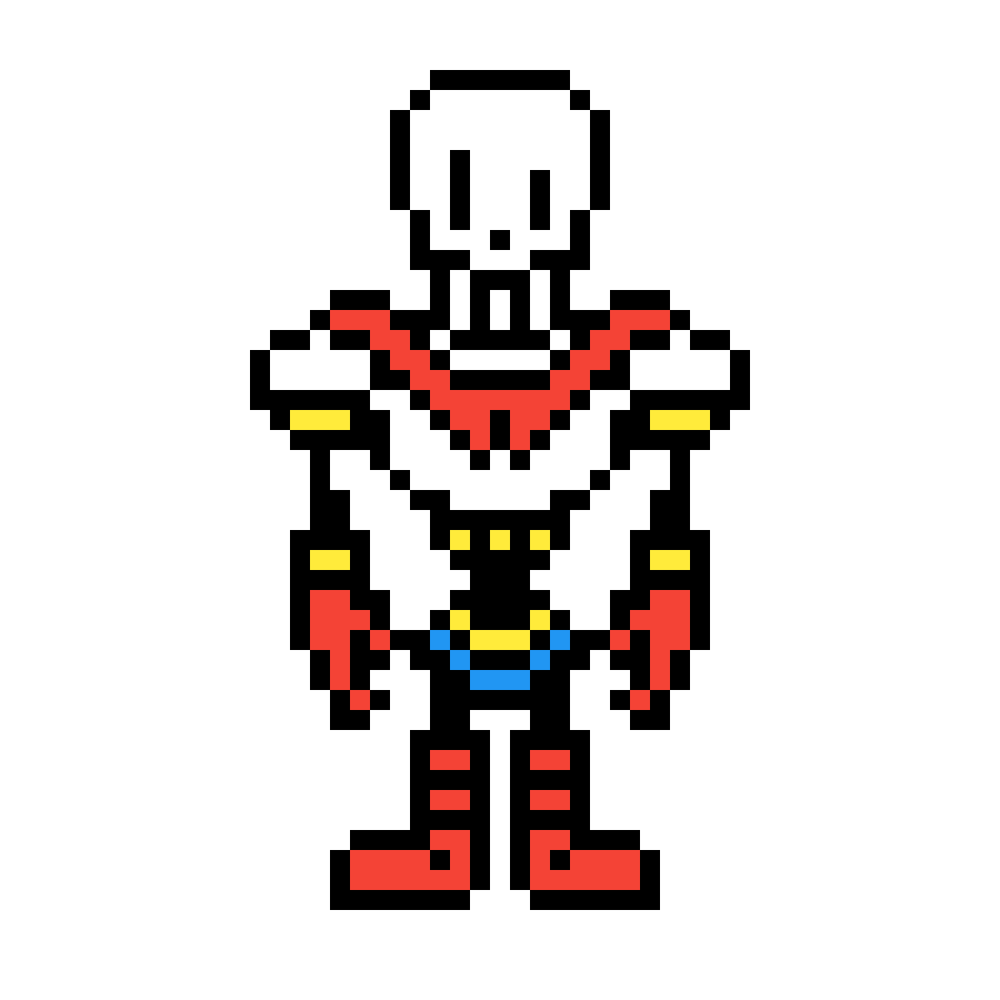
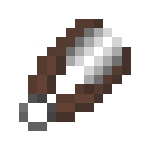

Boulder - a large rock, typically one that has been worn smooth by erosion.
Papyrus - a material prepared in ancient Egypt from the pithy stem of a water plant, used in sheets throughout the ancient Mediterranean world for writing or painting on and also for making rope, sandals, and boats.
Shears - a cutting instrument in which two blades move past each other, like scissors but typically larger.
Scorboard:
wins: 0
losses: 0
ties: 0